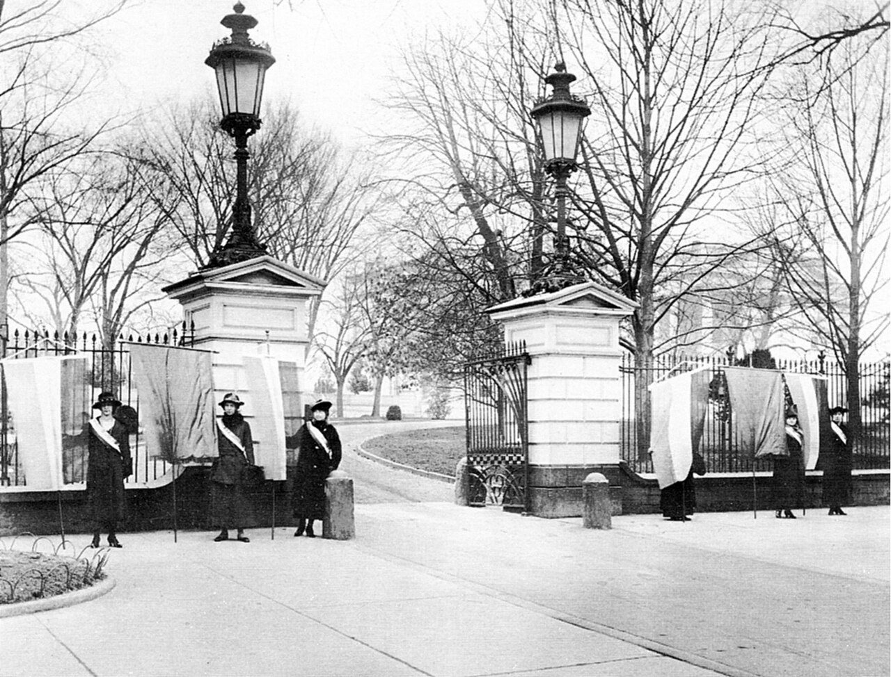
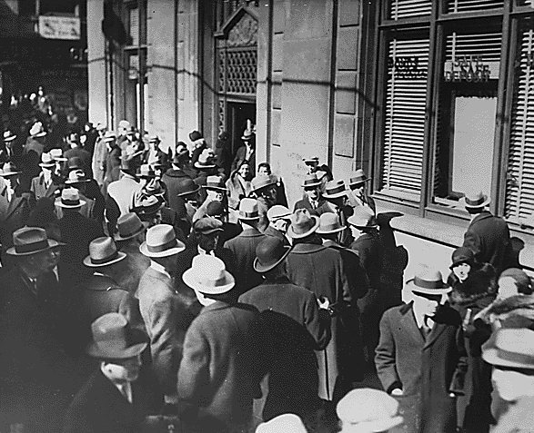
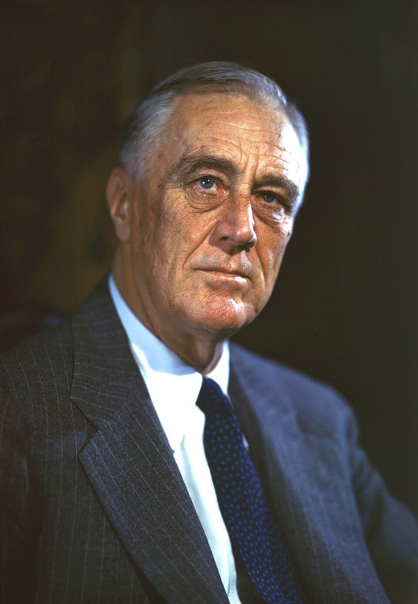
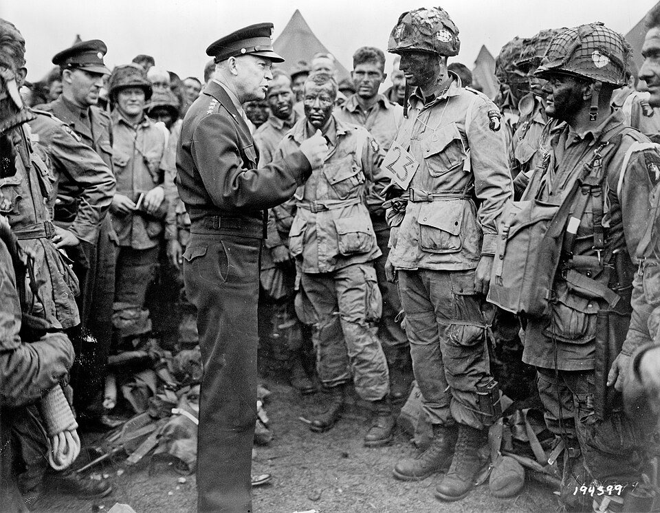
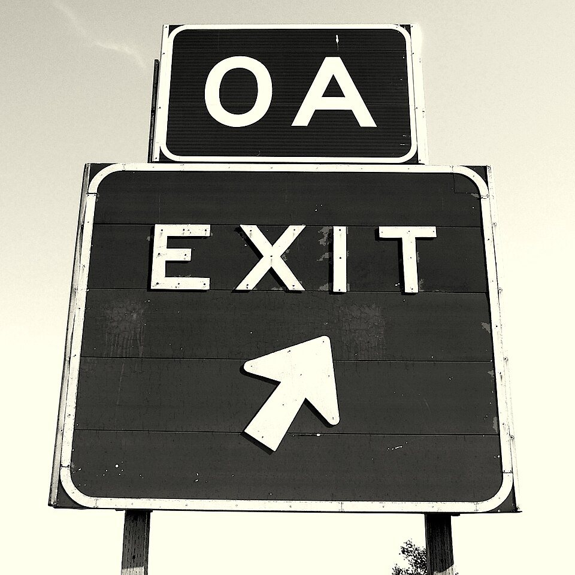
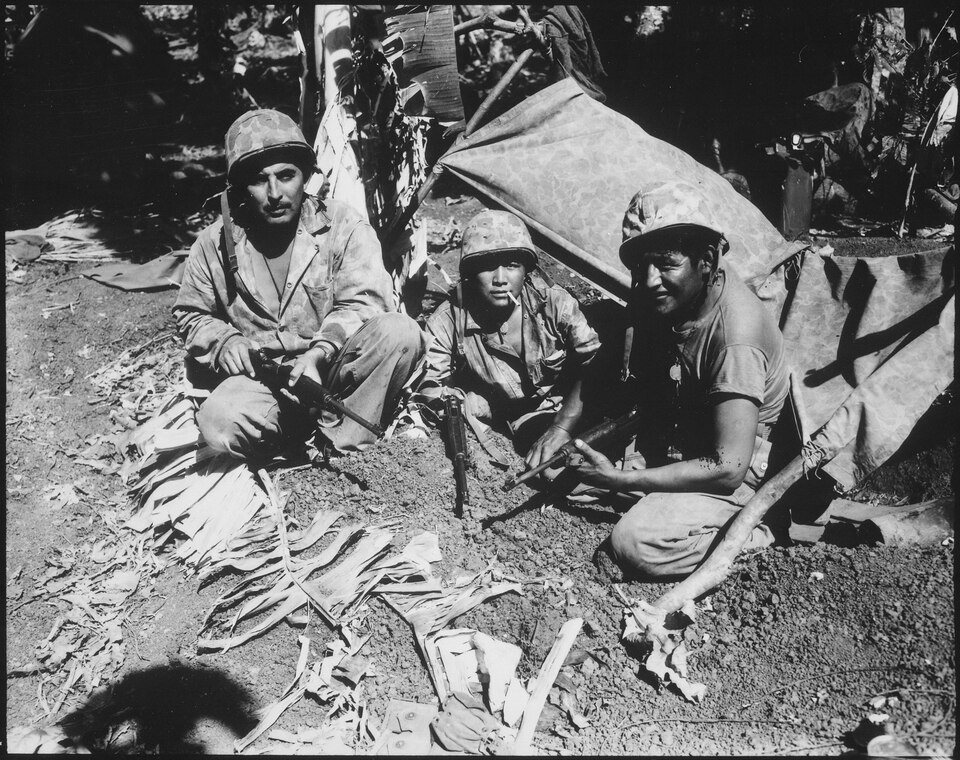
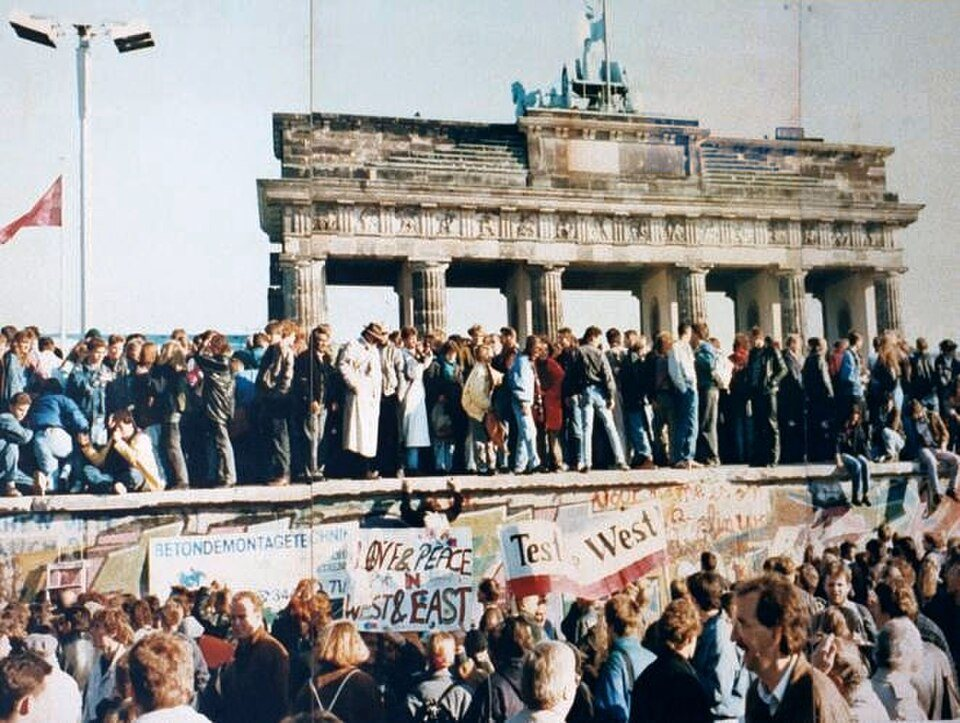
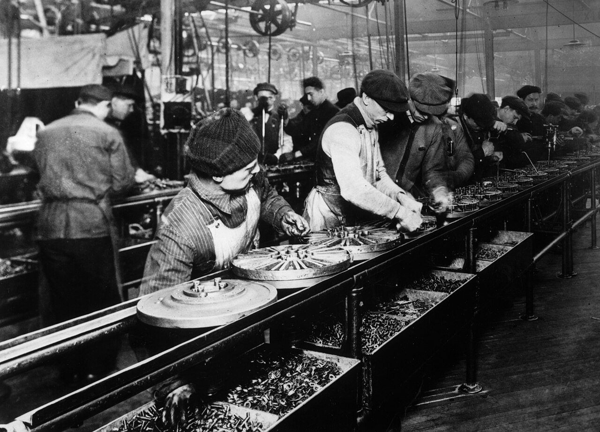

Everything on today’s list happened in the last 110 years. Some of it is the reason your paycheck is safe in a bank right now.
1 in 4
workers had no job in 1933, during the Great Depression
8
Meskwaki soldiers from Tama County, Iowa, used their language as a secret code in World War II
$250K
Amount the government now protects in your bank account, because of the 1930s
Sources: FDIC (fdic.gov) · Iowa Legislature resolution honoring the Meskwaki Code Talkers · U.S. unemployment data, 1933
Today: 19 questions, 5 big ideas
1
World War I changes America (1914–1920)
Q100 · Q101 · Q102
2
Crash, then war again (1929–1945)
Q103–Q107 · Q117
3
The Cold War and the space race (1947–1991)
Q108–Q111 · Q118
4
The fight for civil rights (1950s–1960s)
Q112 · Q113★
5
From the Gulf War to Sept. 11 (1991–today)
Q114 · Q115★ · Q116
★ = one of USCIS’s most important questions · Iowa standards SS.9-12.Gov.11, Gov.14, Gov.15
100 years on one line
Read it left to right, top row first. Today’s game makes you put these in order, so look closely.
1917 U.S. enters World War I
1920 All women can vote
1929 Stock market crash
1941 Pearl Harbor attacked
1950 Korean War begins
1956 Interstate highways law
1963 MLK: “I Have a Dream” ★
1969 Americans land on the Moon
1991 Persian Gulf War
2001 September 11 attacks ★
Trick: the 1900s = years that start with 19. The Civil War (1861) was the 1800s.
Modern America · Iowa Civics Test, Questions 100–118
BIG IDEA 1 · WORLD WAR I
1917: America joins World War I
TEST QUESTION 100
Name one war fought by the United States in the 1900s.
World War I
World War II
Korean War
Vietnam War
(Persian) Gulf War
Easiest to remember: World War II.
TEST QUESTION 101
Why did the United States enter World War I?
Because Germany attacked U.S. (civilian) ships
To support the Allied Powers (England, France, Italy, and Russia)
To oppose the Central Powers (Germany, Austria-Hungary, the Ottoman Empire, and Bulgaria)
Easiest: Germany attacked U.S. ships. Civilian = not in the military.
Modern America · Iowa Civics Test, Questions 100–118
BIG IDEA 1 · WORLD WAR I
1920: Women win the vote

TEST QUESTION 102
When did all women get the right to vote?
1920
1920
After World War I
(With the) 19th Amendment
IOWA CONNECTION · CARRIE CHAPMAN CATT
She grew up on a farm near Charles City, Iowa, and went to college at Iowa State. She led the biggest national group fighting for women’s votes.
Modern America · Iowa Civics Test, Questions 100–118
BIG IDEA 2 · CRASH, THEN WAR AGAIN
1929: The Great Crash

TEST QUESTION 103
What was the Great Depression?
Longest economic recession in modern history
Recession = the economy shrinks. Businesses close. People lose their jobs.
TEST QUESTION 104
When did the Great Depression start?
The Great Crash (1929)
Stock market crash of 1929
Stock market = where people buy and sell small pieces (shares) of companies. In October 1929, prices crashed.
Modern America · Iowa Civics Test, Questions 100–118
BIG IDEA 2 · CRASH, THEN WAR AGAIN
What a bank run means for your paycheck
It’s 1932. You work at a factory in Cedar Rapids. Follow your money:
1 You put your paycheck in the bank.
The bank loans most of it to other people. Only some cash stays in the building.
2 A rumor spreads: “The bank is in trouble!”
People panic.
3 Everyone runs to take their money out at once.
That is a bank run.
4 The cash runs out. The bank closes.
In the early 1930s, your savings could just be gone.
Today: the FDIC (started in 1933) protects your bank money up to $250,000. Since 1934, no one has lost a penny of protected money when a bank failed.
Modern America · Iowa Civics Test, Questions 100–118
BIG IDEA 2 · CRASH, THEN WAR AGAIN
Q105: Which president?

PRESIDENT WHEN THE CRASH HIT · 1929–1933
Herbert Hoover
Born in West Branch, Iowa, near Iowa City. The only president born in Iowa. Not the Q105 answer!
TEST QUESTION 105
Who was president during the Great Depression and World War II?
(Franklin) Roosevelt
President 1933–1945, during the Depression and World War II. Also called FDR. Elected 4 times!
Modern America · Iowa Civics Test, Questions 100–118
BIG IDEA 2 · CRASH, THEN WAR AGAIN
1941: Pearl Harbor
TEST QUESTION 106
Why did the United States enter World War II?
(Bombing of) Pearl Harbor
Japanese attacked Pearl Harbor
To support the Allied Powers (England, France, and Russia)
To oppose the Axis Powers (Germany, Italy, and Japan)
Easiest: Japan attacked Pearl Harbor.
WHAT HAPPENED
On December 7, 1941, Japan’s navy attacked the U.S. Navy base at Pearl Harbor, Hawaii. The next day, Congress declared war.
Modern America · Iowa Civics Test, Questions 100–118
BIG IDEA 2 · CRASH, THEN WAR AGAIN
Q107: Dwight Eisenhower


TEST QUESTION 107
Dwight Eisenhower is famous for many things. Name one.
General during World War II
President at the end of (during) the Korean War
34th president of the United States
Signed the Federal-Aid Highway Act of 1956 (Created the Interstate System)
Easiest: General during World War II.
IOWA CONNECTION
His wife, Mamie Eisenhower, was born in Boone, Iowa. And every time you ride on I-380 or I-80, you are on the Interstate System his 1956 law started.
Modern America · Iowa Civics Test, Questions 100–118
BIG IDEA 2 · CRASH, THEN WAR AGAIN
Q117: Name one American Indian tribe

TEST QUESTION 117
Name one American Indian tribe in the United States.
Navajo
Also on the official list: Apache · Blackfeet · Cayuga · Cherokee · Cheyenne · Chippewa · Choctaw · Creek · Crow · Hopi · Huron · Inupiat · Lakota · Mohawk · Mohegan · Oneida · Onondaga · Pueblo · Seminole · Seneca · Shawnee · Sioux · Teton · Tuscarora
WORLD WAR II · SECRET CODE HEROES
About 400 Navajo Marines used their language as a code the enemy never broke. Eight Meskwaki soldiers from Tama County, Iowa, did the same in North Africa.
Modern America · Iowa Civics Test, Questions 100–118
Quick check: match it
Fingers up: 1 = Franklin Roosevelt · 2 = Herbert Hoover · 3 = Pearl Harbor · 4 = 1929 crash · 5 = Eisenhower
1
Started the Great Depression
2
Why the U.S. entered World War II
3
President during the Great Depression AND World War II
4
World War II general who became the 34th president
5
Iowa-born president when the stock market crashed
Hoover was there when it started. Roosevelt is the test answer for Q105.
BIG IDEA 3 · COLD WAR AND SPACE RACE
The Cold War (1947–1991)

TEST QUESTION 108
Who was the United States’ main rival during the Cold War?
Soviet Union · USSR · Russia
TEST QUESTION 109
During the Cold War, what was one main concern of the United States?
Communism · Nuclear war
Communism = the government owns businesses and land, and one party controls the country.
COLD WAR =
A 44-year rivalry. The U.S. and the Soviet Union raced for weapons, allies, and space, but never fought each other directly.
TEST QUESTIONS 110 + 111
Why did the United States enter the Korean War? The Vietnam War?
To stop the spread of communism
Same answer for both!
Modern America · Iowa Civics Test, Questions 100–118
BIG IDEA 3 · COLD WAR AND SPACE RACE
Q118: American inventions

TEST QUESTION 118
Name one example of an American innovation.
Light bulb
Automobile (cars, internal combustion engine)
Skyscrapers
Airplane
Assembly line
Landing on the moon
Integrated circuit (IC)
Innovation = a new invention or idea.
YOU USE THIS EVERY DAY
The integrated circuit is the computer chip inside your phone and Chromebook. One of its two inventors, Robert Noyce, grew up in Grinnell, Iowa.
CEDAR RAPIDS + THE MOON
Collins Radio in Cedar Rapids built the radio system that carried Neil Armstrong’s words from the Moon to Earth in 1969.
Modern America · Iowa Civics Test, Questions 100–118
BIG IDEA 4 · CIVIL RIGHTS
The civil rights movement
TEST QUESTION 112
What did the civil rights movement do?
Fought to end racial discrimination
Racial discrimination = treating people unfairly because of their race.
TEST QUESTION 113 ★
Martin Luther King, Jr. is famous for many things. Name one.
Fought for civil rights
Worked for equality for all Americans
Worked to ensure that people would “not be judged by the color of their skin, but by the content of their character”
Modern America · Iowa Civics Test, Questions 100–118
BIG IDEA 4 · CIVIL RIGHTS
How did they change the laws?
No army and no weapons. Ordinary people used political action: peaceful ways to pressure the government.
Court cases
1954: Brown v. Board. The Supreme Court says separate schools for Black and white students break the Constitution.
Boycotts
1955–56: In Montgomery, Alabama, Black riders refused to ride city buses for over a year.
Sit-ins
1960: Black college students in Greensboro, North Carolina, sat at a “whites only” lunch counter and refused to leave.
Marches
1963: About 250,000 people marched on Washington. MLK gave his “I Have a Dream” speech.
New laws
1964 Civil Rights Act and 1965 Voting Rights Act. Congress made discrimination illegal.
Iowa did it early
1948: Edna Griffin was refused service at a Des Moines lunch counter because she was Black. She led sit-ins and won in court.
Modern America · Iowa Civics Test, Questions 100–118
BIG IDEA 4 · CIVIL RIGHTS
Who gets a voice? Democracy grew
The Constitution didn’t change by itself. People pushed, and the definition of “we the people” got bigger.
1920 19th Amendment: women can vote
1924 All American Indians born in the U.S. become citizens
1964 Civil Rights Act bans discrimination in public places and jobs
1965 Voting Rights Act stops unfair tests that blocked Black voters
1971 26th Amendment: voting age drops from 21 to 18. That’s you.
Test tip: Q102 (“When did all women get the right to vote?”) = 1920 or the 19th Amendment.
Modern America · Iowa Civics Test, Questions 100–118
BIG IDEA 5 · GULF WAR TO SEPT. 11
1991: The Persian Gulf War
TEST QUESTION 114
Why did the United States enter the Persian Gulf War?
To force the Iraqi military from Kuwait
Also called Operation Desert Storm.
WHAT HAPPENED
In 1990, Iraq’s army invaded its small neighbor, Kuwait. In early 1991, the U.S. led a team of many countries that pushed Iraq’s army out in about six weeks.
Memory trick: Gulf War = Get Iraq out of Kuwait.
REMEMBER Q100
The Persian Gulf War is the LAST war on the 1900s list. Wars in Iraq and Afghanistan after 2001 go with Q116.
Modern America · Iowa Civics Test, Questions 100–118
BIG IDEA 5 · GULF WAR TO SEPT. 11
September 11, 2001
TEST QUESTION 115 ★
What major event happened on September 11, 2001 in the United States?
Terrorists attacked the United States
Terrorists took over two planes and crashed them into the World Trade Center in New York City
Terrorists took over a plane and crashed into the Pentagon in Arlington, Virginia
Terrorists took over a plane originally aimed at Washington, D.C., and crashed in a field in Pennsylvania
TEST QUESTION 116
Name one U.S. military conflict after the September 11, 2001 attacks.
(Global) War on Terror · War in Afghanistan · War in Iraq
Modern America · Iowa Civics Test, Questions 100–118
Quick check: why did the U.S. go to war?
Fingers up: 1 = stop communism · 2 = Pearl Harbor · 3 = Germany attacked U.S. ships · 4 = get Iraq’s army out of Kuwait
1
World War I (1917)
2
World War II (1941)
3
Korean War (1950)
4
Vietnam War (1960s)
5
Persian Gulf War (1991)
Five “why did the U.S. enter…” questions: Q101, Q106, Q110, Q111, Q114.
Key words in plain English
Word
What it means
Example
Recession
The economy shrinks. Businesses close and jobs disappear.
The Great Depression (Q103)
Bank run
Everyone tries to pull their money out of a bank at once
Banks closing in the early 1930s
Allied Powers
The side the U.S. joined in both world wars
England, France, Russia
Communism
The government owns businesses and land; one party controls the country
The Soviet Union (USSR)
Discrimination
Treating people unfairly because of who they are, like their race
“Whites only” lunch counters
Terrorism
Using violence against ordinary people to scare a country for a political goal
September 11, 2001
Modern America · Iowa Civics Test, Questions 100–118
Trap: the answer can look different
Q106: “Why did the United States enter World War II?” On test day, the right choice could be ANY of these:
VERSION A
(Bombing of) Pearl Harbor
VERSION B
Japanese attacked Pearl Harbor
VERSION C
To oppose the Axis Powers (Germany, Italy, and Japan)
How to beat it
The U.S. was on the Allied side in both world wars. Axis = Germany, Italy, Japan.
Hoover was president when the crash hit, but the Q105 answer is (Franklin) Roosevelt.
Gulf War (1991) is not the War in Iraq (2003). Civil War is the 1800s, not the 1900s.
Learn the ★ questions first: Q113 (MLK) and Q115 (Sept. 11).
Modern America · Iowa Civics Test, Questions 100–118
GAME TIME · ABOUT 20–25 MINUTES · TEAMS OF 2–3
Timeline Takedown
1 · ORDER IT.4 events on the screen. Write the letters in order, oldest to newest. All 4 right = 2 points.
2 · BUZZ IT.Your teacher reads a test question. First team to slap the desk answers out loud. Right = 2 points. Wrong = every other team can STEAL: write it on your board in 5 seconds for 1 point.
3 · BET IT.Final question. Bet some or all of your points. Right = win the bet. Wrong = lose it.
One board or paper per team. No phones, no notes. Teacher’s call is final.
Most points after the final bet wins. Then: exit ticket.
TIMELINE TAKEDOWN · ROUND 1
Order it: oldest → newest
SET 1 A · Pearl Harbor attacked B · Stock market crash C · All women can vote D · Americans land on the Moon
SET 2 A · Persian Gulf War B · Korean War begins C · September 11 attacks D · U.S. enters World War I
SET 3 A · MLK: “I Have a Dream” B · Eisenhower signs the highway law C · FDR becomes president D · War in Afghanistan begins
SET 4 A · Ford’s first moving assembly line B · Civil Rights Act becomes law C · Navajo Code Talkers in World War II D · Berlin Wall falls
All 4 in the right order = 2 points. Boards up on “Show me!”
Exit ticket
1
Why did the United States enter the Korean War?
2
What did the civil rights movement do?
3
Pick one person or movement from today (like Martin Luther King Jr., Carrie Chapman Catt, Edna Griffin, or the civil rights movement). How did they change democracy in America?
Modern America · Iowa Civics Test, Questions 100–118
Photo and video credits
Suffragists picketing the White House, 1917 (Library of Congress): Unknown author, via Wikimedia Commons (Public domain)
Bank run, February 1933: Photographer not credited., via Wikimedia Commons (Public domain)
Herbert Hoover (National Archives): Unknown author, via Wikimedia Commons (Public domain (U.S. government work))
Franklin D. Roosevelt, 1944: Photograph: Leon Perskie (1899–1982), via Wikimedia Commons (CC BY 2.0)
USS Arizona Memorial, Pearl Harbor (U.S. Navy): DoD photo by: PH3(AW/SW) JAYME PASTORIC, USN, via Wikimedia Commons (Public domain (U.S. government work))
General Eisenhower with paratroopers, June 5, 1944 (U.S. Army): Unknown U.S. Army photographer, via Wikimedia Commons (Public domain (U.S. government work))
Berlin Wall at the Brandenburg Gate, 1989: Unknown photographer, Reproduction by Lear 21 at English Wikipedia ., via Wikimedia Commons (CC BY-SA 3.0)
Ford assembly line, 1913: Unknown author, via Wikimedia Commons (Public domain)
Buzz Aldrin on the Moon, Apollo 11 (NASA): Neil Armstrong, via Wikimedia Commons (Public domain)
Martin Luther King Jr., March on Washington, 1963 (National Archives): Rowland Scherman (1937–) Description American photographer, via Wikimedia Commons (Public domain)
National September 11 Memorial, North Pool: Christian David, via Wikimedia Commons (CC BY-SA 4.0)
President Wilson before Congress, 1917 (Harris & Ewing / National Archives): Unknown author, via Wikimedia Commons (Public domain (U.S. government work))
Navajo Code Talkers on Saipan, 1944 (U.S. Marine Corps / National Archives): Unknown author, via Wikimedia Commons (Public domain (U.S. government work))
Each Wikimedia Commons page lists the photographer and license.